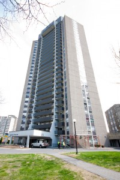

| Home | History | Student Life | Campus news | Sites and Locations | Contact |
Carleton University's history could be dated back as of 1942, hence was of a great contribution to the needs of the era of World war II and is cited in Canada which happens to fall under one of the cold regions in the continent of North America. According to wikipedia it is said to be the first private University under its district "Ontario" in Ottawa.
Carleton has grown successfully to our modern internationally approved standards and accredited institution popularly known all over the world with student capacity of about 26771 in size estimated count after merging both graduate and undergraduate students of various faculty and also about 4260 administrative staffs to manage various academic positions in addition to involve neighbouring instition for their joint courses or programs "University of Ottawa".

 |
 | Contact Information: Telephone: (1) 613-520-2600 Address:1125 Colonel By Drive
|
project designed by Samson and Michael on ELG5121